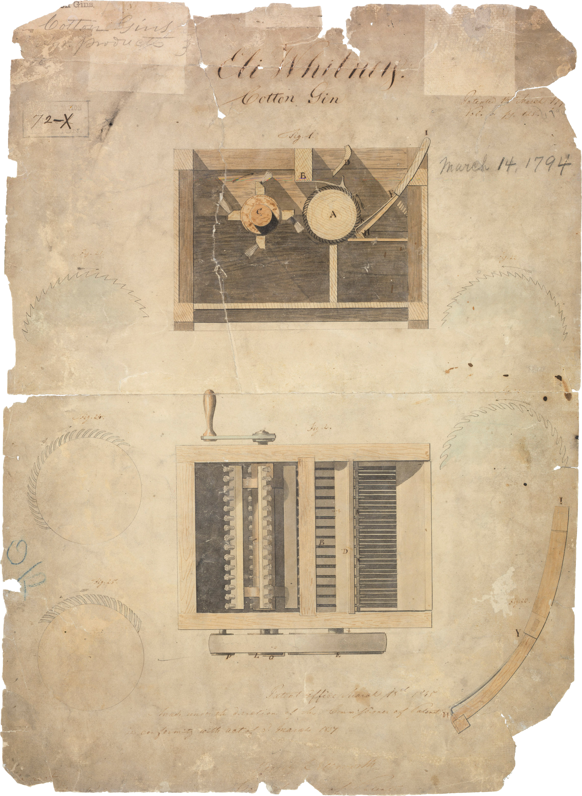
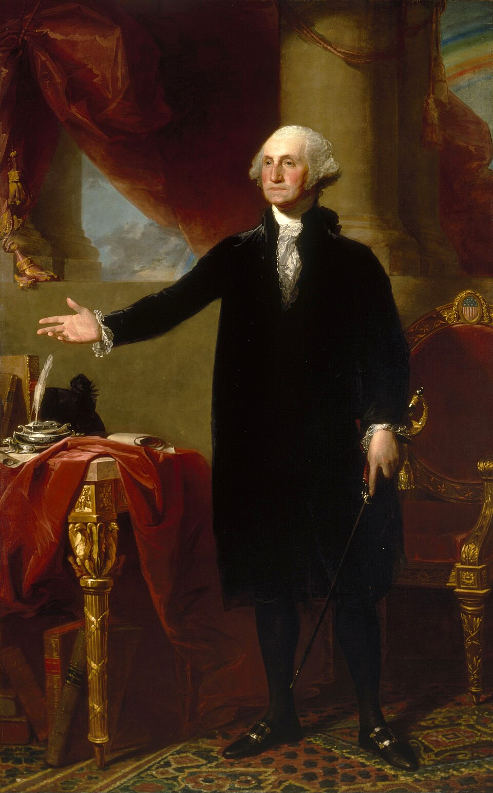

Directions: Work through the five stations in order. Each station holds one record of the new government being built between 1791 and 1796: Hamilton defending the Bank, Washington holding the country out of a European war, the treaty that settled the frontier posts, the patent drawing for the cotton gin, and Washington's Farewell Address. For each record, state what problem of the new government it was solving and what new problem it created. At the end, judge which of Hamilton's four measures did the most to make the federal government real, and defend your judgment from the documents.
Source: Alexander Hamilton, Opinion on the Constitutionality of the Bank, February 23, 1791, Avalon Project, Yale Law School, as carried in the audited TPSP record. Washington had asked his cabinet whether Congress could charter a Bank of the United States. Cuts are marked with ellipses.
The Secretary of the Treasury having perused with attention the papers containing the opinions of the Secretary of State and Attorney General, concerning the constitutionality of the bill for establishing a National Bank, proceeds, according to the order of the President, to submit the reasons which have induced him to entertain a different opinion. ... That every power vested in a government is in its nature sovereign, and includes, by force of the term, a right to employ all the means requisite and fairly applicable to the attainment of the ends of such power, and which are not precluded by restrictions and exceptions specified in the Constitution, or not immoral, or not contrary to the essential ends of political society. ... It is not denied that there are implied as well as express powers, and that the former are as effectually delegated as the latter. ... According to both, necessary often means no more than needful, requisite, incidental, useful, or conducive to.
Hamilton says a government power includes a right to employ means. State the two limits he places on those means, in his own words.
The Bank solved a problem for the new government and created a new one named in the lesson reading. State both problems.
Source: George Washington, Proclamation of Neutrality, April 22, 1793, Founders Online, National Archives, as carried in the audited TPSP record. France had declared war on Britain in February 1793. Cuts are marked with ellipses.
Whereas it appears that a state of war exists between Austria, Prussia, Sardinia, Great-Britain, and the United Netherlands, of the one part, and France on the other, and the duty and interest of the United States require, that they should with sincerity and good faith adopt and pursue a conduct friendly and impartial toward the belligerent powers: I have therefore thought fit by these presents to declare the disposition of the United States to observe the conduct aforesaid towards those powers respectively; and to exhort and warn the citizens of the United States carefully to avoid all acts and proceedings whatsoever, which may in any manner tend to contravene such disposition. ... And I do hereby also make known that whosoever of the citizens of the United States shall render himself liable to punishment or forfeiture under the law of nations, by committing, aiding or abetting hostilities against any of the said powers, or by carrying to any of them those articles, which are deemed contraband by the modern usage of nations, will not receive the protection of the United States, against such punishment or forfeiture.
State the conduct the proclamation declares for the United States, quoting its two describing words, and name the war it answers.
The proclamation solved a problem for the new government and created a new one. State both, using the warning to citizens as your evidence.
Source: Treaty of Amity, Commerce and Navigation (the Jay Treaty), signed November 19, 1794, Avalon Project, Yale Law School, as carried in the audited TPSP record. Chief Justice John Jay negotiated the treaty in London. Cuts are marked with ellipses.
ARTICLE 1. There shall be a firm inviolable and universal Peace, and a true and sincere Friendship between His Britannick Majesty, His Heirs and Successors, and the United States of America; and between their respective Countries, Territories, Cities, Towns and People of every Degree, without Exception of Persons or Places.
ARTICLE 2. His Majesty will withdraw all His Troops and Garrisons from all Posts and Places within the Boundary Lines assigned by the Treaty of Peace to the United States. This Evacuation shall take place on or before the first Day of June One thousand seven hundred and ninety six ...
ARTICLE 6. ... It is agreed that in all such Cases where full Compensation for such losses and damages cannot, for whatever reason, be actually obtained had and received by the said Creditors in the ordinary course of Justice, The United States will make full and complete Compensation for the same to the said Creditors.
State two things this treaty required, one from Britain in Article 2 and one from the United States in Article 6, with the deadline Article 2 sets.
The treaty solved a problem for the new government and created a new one named in the lesson reading. State both problems.
Source: Eli Whitney, Patent Drawing for Whitney's Cotton Gin, March 14, 1794, National Archives (1845 restored copy, made after the original was lost in the Patent Office fire of 1836; the drawing is described in the audited TPSP record, whose description is quoted here). Cuts are marked with ellipses.

The drawing shows the machine in two main views. Fig. 1, at the top, is a cross-section of the gin inside its wooden box frame: the toothed cylinder (A), a large wheel ringed with wire teeth, turns beside the smaller brush wheel or clearer (C), whose bristles sweep the cleaned cotton from the teeth. Between them stands the breastwork (B), the slotted barrier whose narrow openings let the teeth drag the fiber through while the seeds, too large to pass, are held back. ... Fig. 2, below, shows the machine from above in its wooden frame: the cylinder at left bristles with long vertical rows of wire teeth; at center right sit the slotted grate of the breastwork (B) and the hopper (D) ...
Explain how the machine separates fiber from seed, naming the toothed cylinder, the breastwork, and the brush wheel in your answer.
A patent drawing records and protects an invention. State the problem this invention solved for planters, and the new problem its success created for the republic, as the lesson reading states it.
Source: George Washington, Farewell Address, published September 1796, Avalon Project, Yale Law School, as carried in the audited TPSP record. Washington published the address in a Philadelphia newspaper. He did not deliver it as a speech. Cuts are marked with ellipses.

The name of American, which belongs to you in your national capacity, must always exalt the just pride of patriotism more than any appellation derived from local discriminations. ... Let me now take a more comprehensive view, and warn you in the most solemn manner against the baneful effects of the spirit of party generally. ... It serves always to distract the public councils and enfeeble the public administration. It agitates the community with ill-founded jealousies and false alarms, kindles the animosity of one part against another, foments occasionally riot and insurrection. ... The great rule of conduct for us in regard to foreign nations is in extending our commercial relations, to have with them as little political connection as possible. ... It is our true policy to steer clear of permanent alliances with any portion of the foreign world ...
State the two warnings of the address, quoting the phrase Washington uses for each one.
The Lansdowne portrait was painted in the same year as the address. Name two choices Stuart made in picturing Washington, and state what each choice says about the kind of leader the new government claimed to have.
Build the ledger from the five stations. For each record, state the problem of the new government it was solving and the new problem it created, in one sentence each grounded in the station.
| Record | Problem it was solving | New problem it created |
|---|---|---|
| Bank opinion, 1791 | ||
| Neutrality Proclamation, 1793 | ||
| Jay Treaty, 1794 | ||
| Cotton gin patent, 1794 | ||
| Farewell Address, 1796 |
Close the file with a verdict. Judge which of Hamilton's four measures, funding the debt at full value, assuming the state debts, chartering the Bank, or laying the excise tax, did the most to make the federal government real, and defend your choice against the strongest rival measure. Use evidence from at least two stations.
State the two limits Hamilton places on the means a government may employ. The means must not be precluded by restrictions and exceptions specified in the Constitution, and they must not be immoral or contrary to the essential ends of political society. Hamilton states both limits inside his general principle: every power vested in a government includes a right to employ all the means requisite and fairly applicable to the attainment of its ends, subject to those limits.
State the problem solved and the new problem created. Solved: the new government had listed powers, including collecting taxes and regulating commerce, and no settled way to hold its money, issue a uniform currency, or move credit, and opponents held that Congress could use only means the Constitution named. The opinion supplied the doctrine, implied powers delegated as fully as express ones and necessary read as needful or conducive, under which a bank could be chartered as a means. Created: the doctrine itself became the ground of the first party fight, because a strict reading held that a means nowhere named was a power nowhere granted, and the argument over the Bank sorted the cabinet and then the country into Federalists and Democratic-Republicans.
State the declared conduct, quoting its two describing words, and name the war. The United States would adopt and pursue a conduct friendly and impartial toward the belligerent powers. The war was the war of revolutionary France against Britain and its allies, declared in February 1793, which pressed the young republic to honor its 1778 alliance with France or stay out of a European war.
State the problem solved and the new problem created. Solved: the proclamation kept a weak new government out of a war it could not afford and asserted that the president could declare the nation's posture toward a foreign war. Created: the warning turned neutrality into a duty enforced against Americans themselves. A citizen who aided either side or carried contraband would lose the protection of the United States and face prosecution, so the government's first foreign policy act also claimed power over its own citizens' sympathies and trade, and opinion split along the party line over France and Britain.
State one requirement from each article, with the deadline. Article 2 requires Britain to withdraw all its troops and garrisons from all posts and places within the boundary lines assigned by the Treaty of Peace to the United States, the evacuation to take place on or before the first day of June 1796. Article 6 requires the United States to make full and complete compensation to British creditors for prewar debts that could not be recovered in the ordinary course of justice in American courts.
State the problem solved and the new problem created. Solved: Britain still held frontier posts on American soil a decade after the peace treaty, seized American ships, and left prewar debts unsettled, and the new government had no army or navy that could force the posts open. The treaty won the evacuation and a settlement by negotiation. Created: the price, compensation for British creditors and accepted British limits on American trade, read to many Americans as surrender to Britain. Crowds burned Jay in effigy and the Senate approved the treaty by the bare two thirds it required, so the settlement deepened the party division it was meant to rise above.
Explain how the machine separates fiber from seed. The toothed cylinder, a wheel ringed with wire teeth, drags cotton fiber through the narrow openings of the breastwork, the slotted barrier between the cylinder and the clearer. The seeds, too large to pass through the slots, are held back and fall away. The brush wheel or clearer, whose bristles sweep the teeth, removes the cleaned cotton from the cylinder so the work can continue. Credit requires all three parts in that order of operation.
State the problem solved for planters and the new problem created for the republic. Solved: short staple cotton grew well across the inland South but its sticky seeds had to be picked out by hand, slowly, so the crop could not be sold at a profit. The gin cleaned it by machine and made the crop profitable. Created: the profitable crop raised the demand for enslaved labor to plant and pick it. Slavery, which many in the founding generation had expected to wither, gained a new economic engine under the new government's own patent laws, and cotton planting and enslavement expanded across the South.
State the two warnings, with Washington's phrases. Against the spirit of party: Washington warns in the most solemn manner against the baneful effects of the spirit of party generally, which distracts the public councils, enfeebles the public administration, and kindles the animosity of one part against another. Against permanent foreign alliances: the great rule of conduct toward foreign nations is to extend commercial relations while having as little political connection as possible, and it is our true policy to steer clear of permanent alliances with any portion of the foreign world.
Name two choices in the Lansdowne portrait and what each says. Washington wears a plain black velvet suit rather than a uniform, which presents the head of the government as a civilian leader under law rather than a general ruling by the sword. He carries a dress sword rather than a battle sword, a sign of office held in reserve. The Federalist and the Journal of Congress stand on the table beside him, placing written law and the record of the legislature at the center of his authority. Behind him storm clouds give way to a rainbow, presenting the Revolution's turmoil as yielding to peace under the new government. Any two choices, each tied to its claim, earn full credit.
The Bank opinion solved the problem of means, how a government of listed powers could build the financial machinery the list never named, and created the constitutional argument that formed the first parties. The Neutrality Proclamation solved the problem of survival in a European war and created the problem of a government policing its own citizens' aid and trade. The Jay Treaty solved the problem of the frontier posts and old debts without a war and created the problem of a settlement half the country read as surrender. The cotton gin patent solved the planter's problem of cleaning short staple cotton and created the republic's deepest problem, a new economic engine for slavery. The Farewell Address solved the problem of succession, a president leaving office by choice after two terms, and created the standard against which his successors would be judged, a standard its own author knew the parties already forming would strain. Closing verdicts earn full credit when the measure chosen is defended against a named rival measure. The strongest cases are usually made for the Bank, argued from Station 1: funding and assumption were promises, while the Bank was a working institution that held the government's money and issued its currency every day; for assumption, argued from the creditor shift: it moved the loyalty of the states' creditors to the union in a single act; and for the excise, argued from Station 2 of the reading and the Whiskey Rebellion: a tax collected, and enforced by an army when resisted, is the point at which a government stops being a proposal. A case for funding can earn full credit if argued from credit itself, that a government whose word lenders trust can borrow in an emergency and a government whose word is worthless cannot.